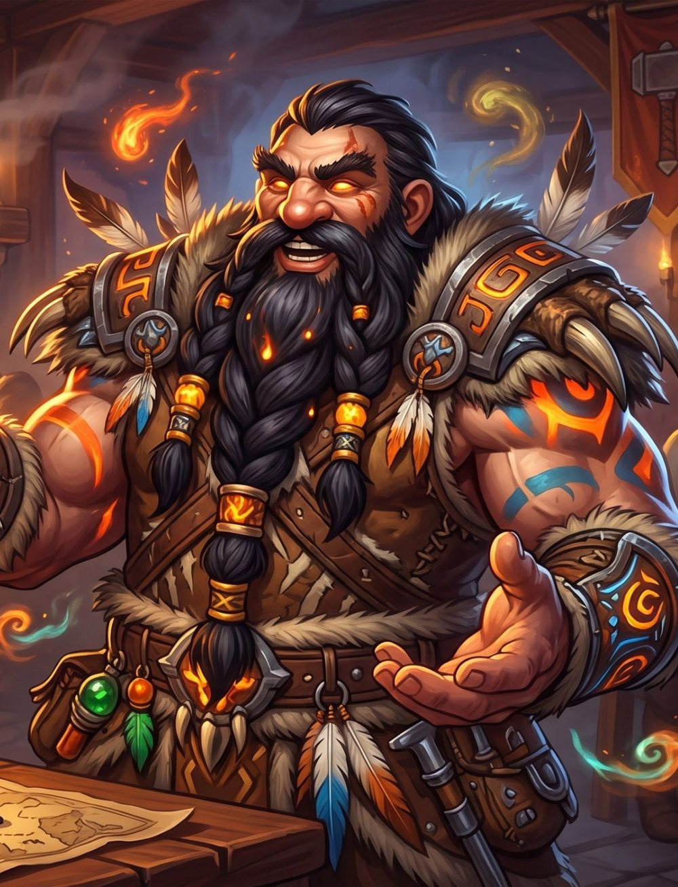

Dagnar was a demolitions engineer for the Dark Irons until a job in Loch Modan went bad and he walked away from it, and from them. He doesn't talk about it. He drifted to the Wildhammer in the Hinterlands, where an old shaman noticed the fire in him and taught him to hold it instead of letting it hold him. He took the name Barleigh because he liked the sound of it and because nobody would come looking for a dwarf called Barleigh.
He's not the reverent type. He deals with the spirits the way he deals with everyone: over a drink. Sober, the fire's too loud in his head. A few pints in, he's the best negotiator in the room. The one thing the drink doesn't help is his hands. Past the fourth pint his engineering tends to explode.
He's easy company. He'd rather be in a loud tavern or on the road with a group than anywhere quiet, and he'll follow just about anyone just about anywhere if there's a good time at the end of it. He's curious about everyone who isn't a dwarf. Somewhere in all that he's looking for the one person who'll stick around.
Barleigh isn't the name he was born with. The name he was born with is on a Dark Iron casualty list in Shadowforge City, and he put it there himself.
He was a sapper for the Thaurissan line, the kind of engineer who gets sent in first because he's cheaper than the door. When the officers wanted a tunnel under a Bronzebeard outpost in Loch Modan and didn't care who was above it, they sent Dagnar. He set the charges. He counted the families on the way in. Then he cut the fuse, walked out the far side, and kept walking until the mountains changed shape.
The Wildhammer in the Hinterlands ask Dark Irons one question, and the answer is a fight. He won his, barely. The shaman who'd been watching offered to teach him to hold the fire. He asked what it would cost. She said everything he was still pretending to be. That was the last fight he started.
His totems are cased in blackened Dark Iron plate with a screw-cap at the base; he says it's for drainage. It isn't. His still is a reworked demolition rig that makes something closer to solvent than whiskey; he sells it in Booty Bay. He ran the back room at the Grim Guzzler for a Thorium Brotherhood foreman for four months. There's a reason he isn't welcome in Blackrock Depths anymore, a reason the back room has a new ceiling, and a reason the Brotherhood still buys his spirits at the price he set.
He doesn't want redemption. He thinks it's a Light-worshipper's word for forgetting. If you ask him about Loch Modan, he'll tell you exactly how many families there were. He's never once gotten the number wrong.
